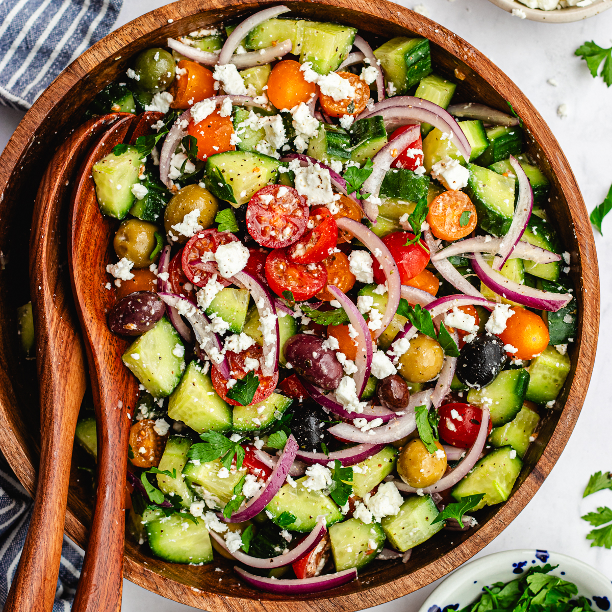

Cucumber Salad
Cucumber Salad

Description
Cucumber salad is a light and refreshing dish made by thinly slicing fresh cucumbers and tossing them with a simple dressing of vinegar, olive oil, salt, pepper, and a touch of sugar for balance. Often enhanced with thinly sliced red onions, fresh dill, or parsley, the salad is chilled for a short time to allow the flavors to meld. Some variations include yogurt or sour cream for a creamy texture. It’s a quick, healthy side dish that pairs well with grilled meats, sandwiches, or as part of a summer spread.
Ingredients
- Cucumbers
- Red Onion
- Fresh Oil
- Olive Oil
- Black Pepper
- Sugar
Steps
- Slice the cucumbers - Thinly slice fresh cucumbers (and red onion if using) using a knife or mandoline for even slices.
- Prepare the dressing - In a small bowl, whisk together vinegar, olive oil, salt, pepper, and a pinch of sugar. Add herbs like dill if desired.
- Combine the ingredients - In a large bowl, toss the sliced cucumbers (and onions) with the dressing until well coated.
- Chill the salad - Cover and refrigerate the salad for at least 15 - 30 minutes to let the flavors meld
- Serve and enjoy - Give the salad a quick stir, adjust seasoning if needed, and serve chilled.
Home